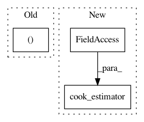

57caf0454955b0f2eebd91605946052a1c42a530,skopt/optimizer/gp.py,,gp_minimize,#,16
Before Change
else:
other_kernel = Matern(
length_scale=np.ones(space.transformed_n_dims),
length_scale_bounds=[(0.01, 100)] * space.transformed_n_dims,
nu=2.5)
base_estimator = GaussianProcessRegressor(
After Change
)
space = Space(transformed_dims)
base_estimator = cook_estimator("GP", space=space, random_state=rng, noise=noise)
return base_minimize(
func, dimensions, base_estimator=base_estimator,
acq_func=acq_func,
In pattern: SUPERPATTERN
Frequency: 3
Non-data size: 3
Instances
Project Name: scikit-optimize/scikit-optimize
Commit Name: 57caf0454955b0f2eebd91605946052a1c42a530
Time: 2017-06-26
Author: mks542@nyu.edu
File Name: skopt/optimizer/gp.py
Class Name:
Method Name: gp_minimize
Project Name: scikit-optimize/scikit-optimize
Commit Name: 57caf0454955b0f2eebd91605946052a1c42a530
Time: 2017-06-26
Author: mks542@nyu.edu
File Name: skopt/optimizer/forest.py
Class Name:
Method Name: forest_minimize
Project Name: scikit-optimize/scikit-optimize
Commit Name: 57caf0454955b0f2eebd91605946052a1c42a530
Time: 2017-06-26
Author: mks542@nyu.edu
File Name: skopt/optimizer/optimizer.py
Class Name: Optimizer
Method Name: _check_arguments